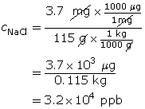
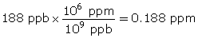

Module 4—Properties of Solutions
Parts per Billion
© J. Helgason/shutterstock
Units of parts per billion are used for solutes that are extremely dilute. The mathematical rules for ppb concentrations are very similar to ppm concentrations—the only difference is that the mass of solutes is a billion times less than the mass of solution. The mass of solute is so small that it is measured in micrograms (μg). The μ that you see is the Greek letter mu, and a microgram is one millionth of a gram. Recall that a milligram is one-thousandth of a gram. A part per billion may be thought of as one drop of water in a full swimming pool or as 1 second every 32 years.
Work through the following examples to practise calculations involving ppb concentration.
Example 4: 150 μg of lithium bromide is dissolved in water to make a 25-L solution. Express the concentration in ppb.

The units of the solute are in micrograms (μg), so no conversion is required. The units of water are in litres (L), so no conversion is required.
Example 5: 3.7 mg of sodium chloride is dissolved in water to make a 115-g solution. Express the concentration in ppb.
The units of the solute are in milligrams, so convert milligrams (mg) into micrograms (μg). The units of water are in grams, so convert grams (g) into kilograms (kg).

 Self-Check
Self-Check
SC 24. 115 μg of sodium nitrate is dissolved in water to make a 32-L solution. Express the concentration in ppb.
SC 25. 5.1 mg of magnesium sulfate is dissolved in water to make a 220-g solution. Express the concentration in ppb.
SC 26. 2.0 × 10–3 g of sodium chloride is dissolved in 72 g of water. Express the concentration in ppb.
SC 27. A sample of water contains 900 ppb lead. Write this as a ratio.
SC 28. A fish contains 200 ppb mercury. Write this as a ratio.
SC 29. Convert 230 ppm into ppb.
SC 30. Convert 188 ppb into ppm.
Self-Check Answers
SC 24.

SC 25.

SC 26.

SC 27.

SC 28.
SC 29.

SC 30.
